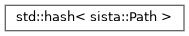

Sista
v3.0.0-alpha.21
C++ lightweight OS-agnostic library for terminal animations and videogames
Loading...
Searching...
No Matches
Class Hierarchy
Go to the textual class hierarchy

Generated on Mon Dec 29 2025 12:32:05 for Sista by
1.9.8